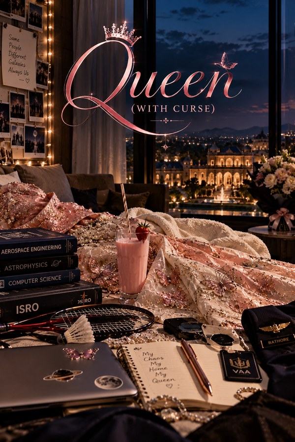

Queen (with Curse)
Meet the Queen. Meet her people.
A seven-book saga of love, friendship, family, ambition, destiny, loss and the fragile line between devotion and destruction
Read on WattpadSome people enter your life as strangers. Some become family. And some become the reason you survive it.
At sixteen, Dev thought life was simple. College. Friends. Dreams. Football. A future waiting to be built.
Then came Arshi Mahindra Rathore.
Fourteen. Brilliant. Fearless. Impossibly cheerful. A girl who could walk into a room and somehow make everyone else’s world revolve around her. And somewhere beside her stood Abhinav Pradhan. Fifteen. Quiet. Brilliant. Complicated. Carrying a loneliness no one his age should have known.
Neither of them knew that meeting each other would change the course of their lives forever. Neither did the boys who would become their closest friends. And none of them knew that their story had already been written somewhere far beyond their understanding.
Because behind Arshi’s laughter lies a past she refuses to speak about. Behind Abhi’s silence lies a world he has never allowed anyone to enter. Behind their growing friendship lies something neither of them is prepared to name.
And watching over them is Vikramaarjuna Mahindra Rathore. A legendary scientist. A powerful heir. A brother who loves fiercely enough to challenge the world for the people he calls his own. To everyone else, Vikram is extraordinary. To Arshi, he is simply Bhayya. To Abhi, he is the brother he never knew he needed. And to Dev and Sanju, he becomes the man who will change the meaning of family forever.
But love is never the only thing waiting for them. There are secrets buried beneath powerful names. There are promises that will be tested. There are choices that cannot be undone. There are people who will betray the ones they are supposed to protect. There are dreams that will demand sacrifices.
Across seven books, Queen (with Curse) follows Arshi, Abhinav, Vikram, Dev, Sanju and the people who become their family as they grow from teenagers into adults, building careers, discovering love, surviving betrayal, facing impossible choices and carrying the consequences of every decision they make.
How much can love endure before love itself becomes a curse?
Meet them
- Arshi Mahindra Rathore. A girl who refuses to bow.
- Abhinav “Abhi” Pradhan. A boy who finds home in another person.
- Vikramaarjuna “Vikram” Mahindra Rathore. A brother who would burn the world to protect his family.
- Dev & Sanju. Friends who become something much greater than friends.
Because sometimes the greatest love stories are not about two people finding each other. They are about everyone they change after they do. Every love has a price… and every promise has a consequence.